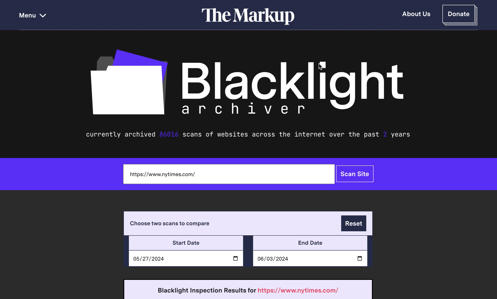
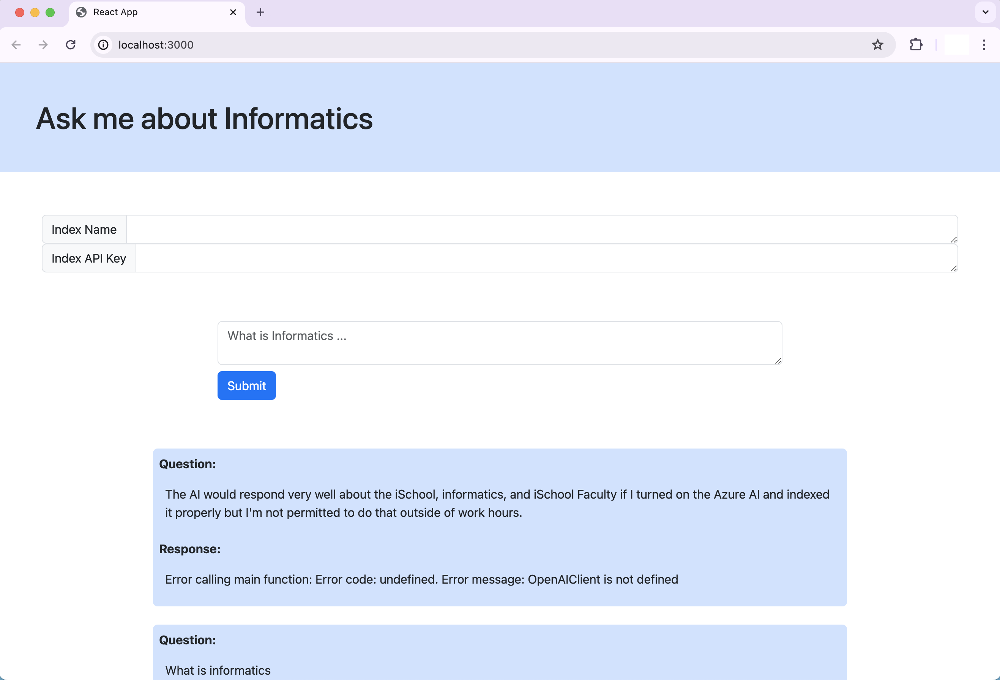

Interesting Projects
These are some of the professional, personal, and academic projects I have completed in the IT field. I am extremely grateful for the opportunities I have had to try new things and learn new skills and this portfolio showcases some of my most fuffilling work. Please, feel free to ask me about any of these projects, I would love to tell you more about my thought process, the development, or what I learned from it.
Blacklight Archiver was my recently completed Informatics capstone: a significant data engineering and software development project for The Markup, a non-profit newsroom. The Blacklight Archiver builds on the functionality of The Markup's cybersecurity tool which scans websites for third-party cookies, invasive tracking policies, and other privacy concerns. The Blacklight Archiver aims to provide users with a detailed look into the progression of data tracking and invasive policies for various websites over time.
The goal of the project was to implement a data pipeline for the continuous management and storage of website scan data. This involved using Python and Javascript to implement new AWS features including Lambda, S3, DyanmoDB, and EC2 to build upon the existing cloud infrastructure.
Blacklight Archiver
Jan 2023 - June 2024
Utilize experimental access to Microsoft Azure to investigate the potential uses of Azure AI for the iSchool. Cultivate data to anable an LLM to reliably answer questions about the iSchool, and if possible make a proof of concept chatbot to be integrated into the iSchool website in the near future.
I developed a web application for a chatbot designed to specifically answer questions regarding the iSchool. The minimal data to prove this concept is iSchool Faculty and general iSchool programs. The data was collected using various APIs and custom web-scraping Python scripts. The web application was designed using native React.js and JavaScript and it was dockerized for ease of sharing between IT staff for approval.
iSchool IT Chatbot
May 2024
Develop scripts to investigate the University of Washington access control groups. These groups manage all levels of access at the University of Washington, there are thousands of groups laying the groundwork for what each student, faculty, and staff have access to.
Specifically, I wrote Python scripts to manage these groups, and easily classify group membership and relationships. The scripts are being used to positively impact every student and faculty at UW, improve the UW IT infrastructure, as well as help simplify common issues for UW IT staff.
UW Access Control Scripts
Oct 2023
Created a Firebase web application accessible from any device, capable of storing personalized data and customizable features utilizing HTML, CSS, JavaScript, and native React.js.
This group project is unfinished, due to my teammates not finishing their work in the time allotted. I created the Navbar and the Daily Entry/Main Page, leaving the project more of a proof-of-concept.
Note: Make your own account, or use the email: hello@gmail.com and password: password1

Developed an interactive Shiny web application using R and HTML to analyze and present pricing, accessibility, and diversity data of residential areas. The goal of the project was to learn how to use R and web design to create a meaningful interactive data visualizations and analysis addressing the socioeconomic impacts of internet speed disparities via redlining and price-gouging in low-income areas.